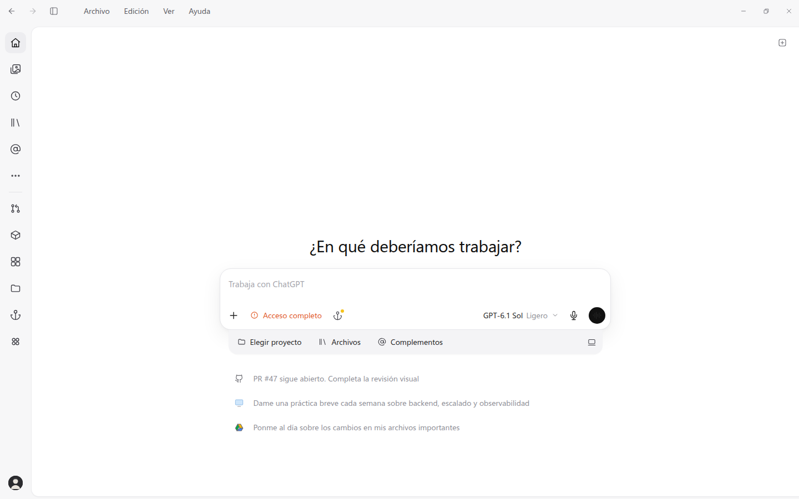

Home, both regions closed — wireframe 01 vs app at 1440x900
reference: docs/wireframes/01-home.html

→
current: app / (PR HEAD)
rail 56x900 @ 0,0
composer dock 705x151 @ 396,404
The reference draws a 40px title bar and placeholder content the app intentionally does not reproduce (issue #42 removal); region geometry, clipped controls and landmarks are the comparison, not whole-page pixels.
Home, sidebar open — wireframe 02 vs app at 1440x900